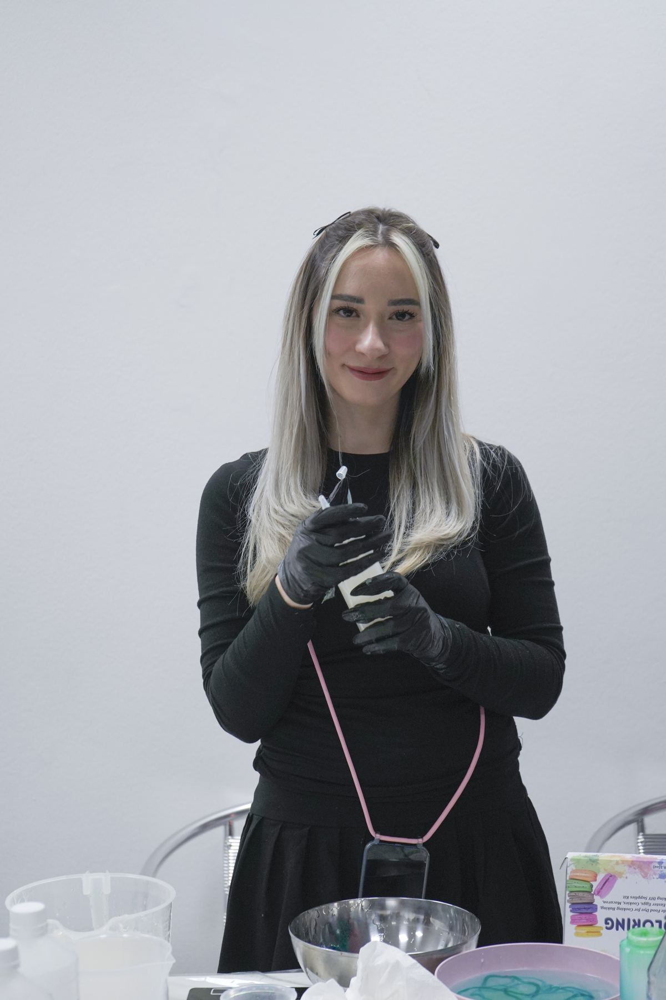
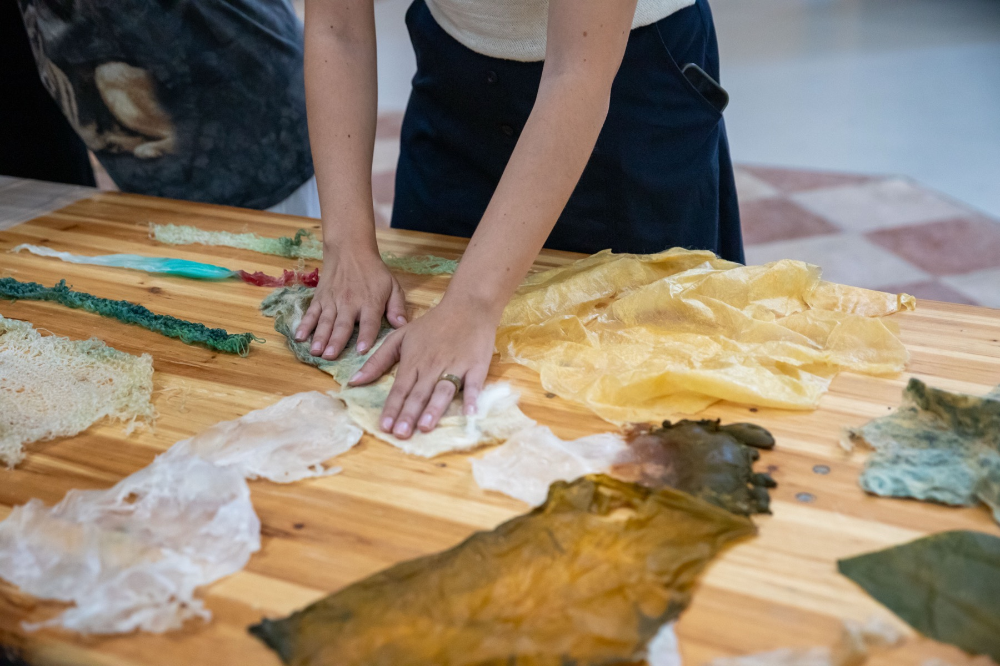
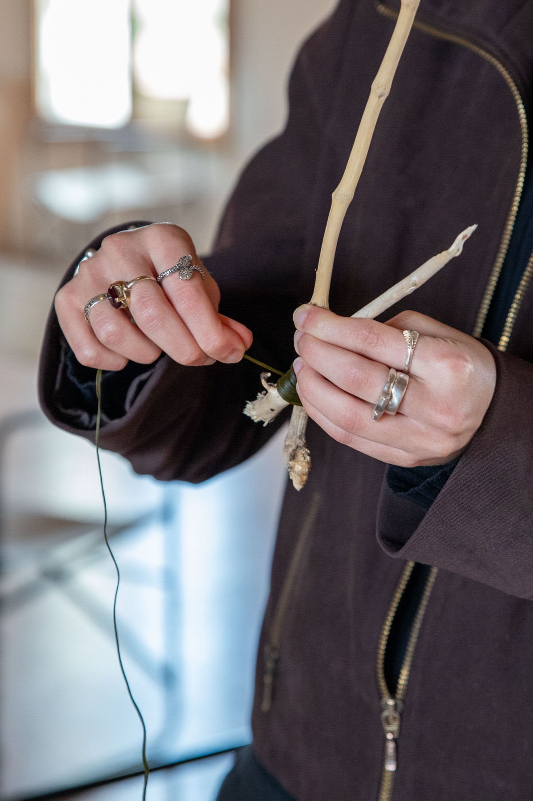
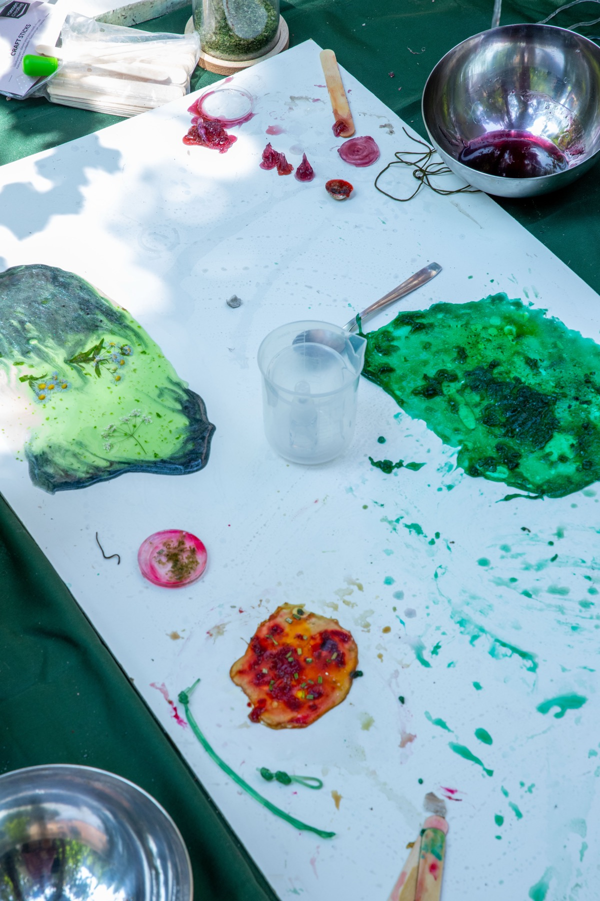
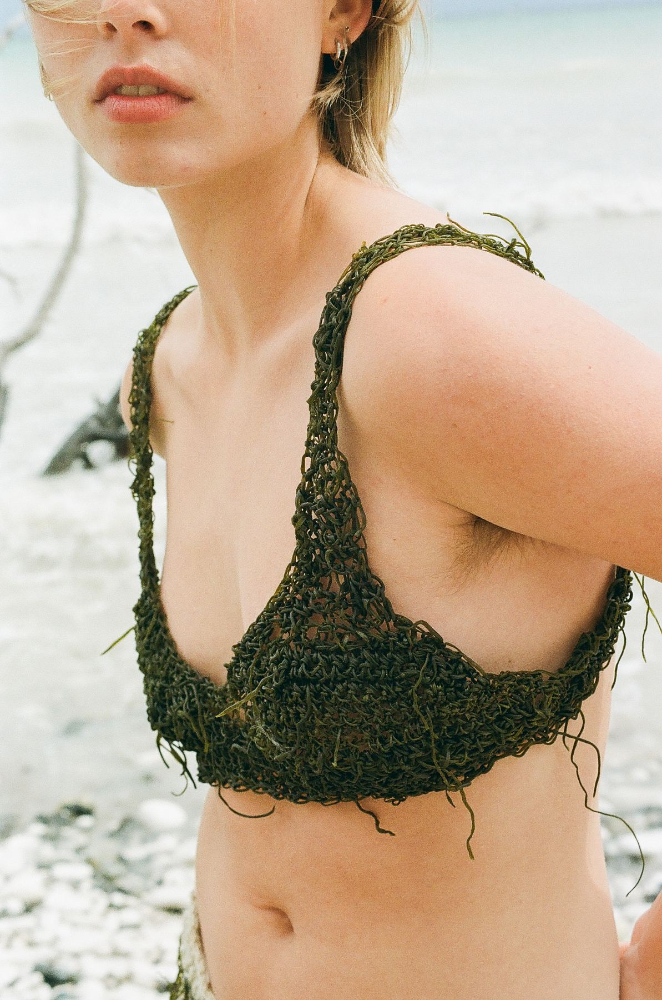
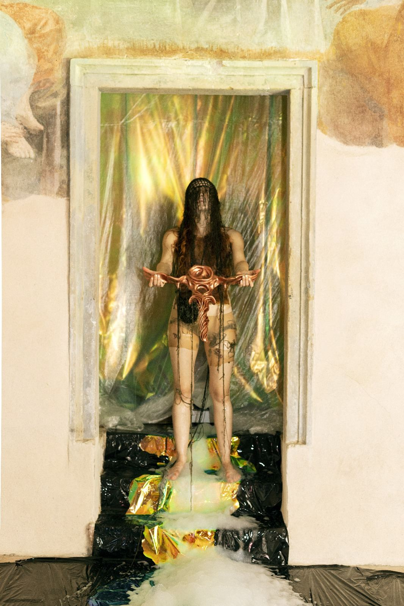
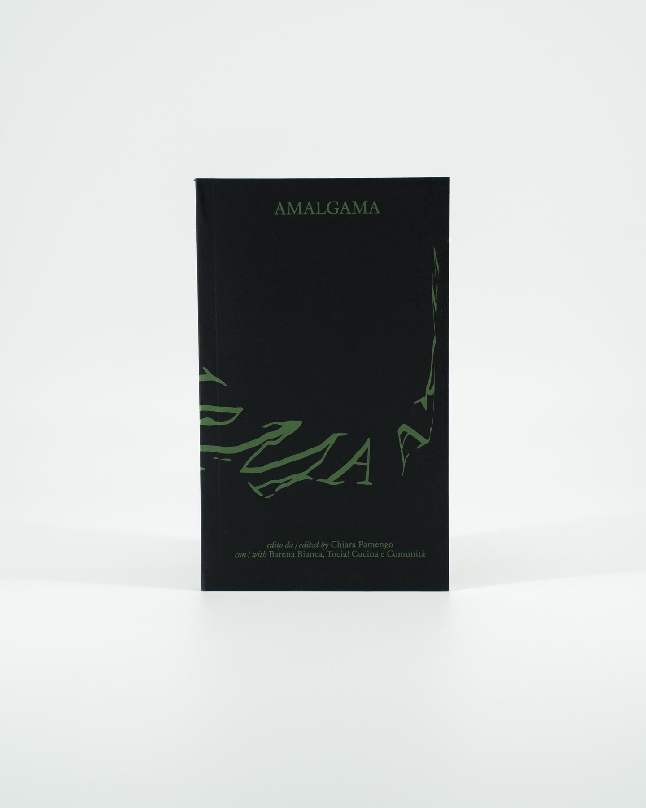

Material research
Algae-based biomaterials and alginate yarn, developed through a research-through-design approach.
The practice
A research-through-design practice on alginate and algae-derived biomaterials: reactive matter shaped by water, salinity, time and gesture.

I am Carola Emanuela Godja, a designer and researcher. I found my way into design through my hands and a material that transforms, not through fabric.
I trained in Fine Arts, with a thesis already turned towards plant intelligence, then moved to Venice for a Master's degree in Fashion at Iuav University. There, seminars on living materials led me first to bacterial cultures, then to algae-based biopolymers.
My first threads, made with a basic recipe from molecular cooking, dried stiff and brittle, exactly like algae drying on the edge of the lagoon. Understanding that failure, instead of stopping there, is where the research began.
Today Emi BioLab works on one material in depth: alginate yarn. I share it through workshops, lectures and collaborations with artists and institutions, within a theoretical frame drawn from new materialism, Jane Bennett and Donna Haraway.
Biography drafted from existing notes, to be reviewed by Carola. to confirm
Statement
My practice treats alginate as a reactive, situated material system, shaped less by control than by conditions. Design, here, emerges from processes of transformation, decay and environmental attunement, and from the more-than-human relationships that the Venetian lagoon makes visible.
Algae-based biomaterials and alginate yarn, developed through a research-through-design approach.
A material that behaves: it stiffens like algae in the sun, softens with care. It has to be listened to, not only worked.
Workshops, seminars and lectures as spaces of exchange. The learning goes both ways.
Teaching, lectures and workshops
Kent State University, Florence Program · Italy
A hands-on workshop introducing students to alginate-based yarn production, biotextile experimentation and material exploration through algae-derived biomaterials.
Iuav University of Venice · New Media and Fashion Communities Studio, led by Caterina Pecchioli, discussion by Clizia Moradei
Invited lecture on alginate as a reactive and situated material system, and on workshops and digital communities as spaces for material learning and exchange.
University of Illinois Urbana-Champaign x Tessitura La Colombina · Italy
A workshop for international students on algae-derived biomaterials and biotextile processes, in collaboration with Prof. Chiara Vincenzi.
University of Illinois Urbana-Champaign · USA
An independent research practice centred on biomaterials, situated design and lagoon ecologies.
Universidad ORT · Uruguay
Invited seminar on biomaterial experimentation, algae-based materials and design research practices.
TEDx Venezia, The Human Safety Net · Italy
A public workshop on biomaterials and nature-inspired design through hands-on material experimentation.
AWAi Association, Venice · Italy
A participatory workshop within the exhibition Hide and Seek, curated by Deborah Maurelli, on collective making and material experimentation.
Ocean Space / TBA21-Academy, Venice · Italy
A public workshop on biomaterials, lagoon ecologies and situated forms of knowledge production.
Fondazione Bevilacqua La Masa, Venice · with artist Camilla Dalmazio
A co-led workshop investigating biomaterials through embodied practices, collective experimentation and material inquiry.
Selected projects

2025 · Venice
Ocean Space / TBA21-Academy

2025 · Venice
Fondazione Bevilacqua La Masa, with Camilla Dalmazio

2025 · Venice
AWAi Association, exhibition Hide and Seek

Collaboration
Crochet and algae yarn details to add

Collaboration
Performance with alginate yarn details to add

Berlin
with Nomad Collective year to add

Publication · 2025
A printed publication commissioned by TBA21-Academy and edited by Chiara Famengo, in collaboration with Barena Bianca and Tocia! Cucina e Comunità. Published by Bruno Books, printed by No Stress Press. It brings together artists, designers, researchers and local practitioners engaged with the cultural and ecological landscapes of the Venetian Lagoon.
My contribution focuses on biomaterial experimentation and algae-based research, and on how lagoon ecologies can inform other ways of thinking about materials: design that emerges from interdependence, transformation and environmental attunement.
Universities, institutions, artists
Lectures, workshops and collaborations are shaped around each context. Write to me with a few lines about your project.
hello@emibiolab.comemail address to confirm CV · PDF